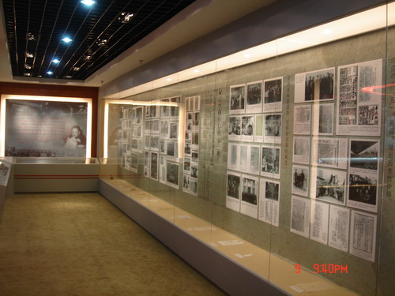
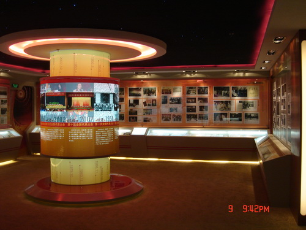

民进会史展览1

民进会史展览2

民进会史展览3
民进会史展览位于民进中央机关，是民进会史重要的教育基地之一。始建于1999年8月，2010年1月改建完成，后历经多次更新。展览突出会史的教育功能，在设计上注重体现内容的丰富性和形式的多样化，采用新颖独特的创意和现代化的展览手段。通过丰富详实的图片、文字等形式展现民进成立以来的发展脉络；通过多项重要文物实物和复制品展出，增加展览的历史凝重感；通过声光电等高科技手段，增加展览的互动性、多样性。